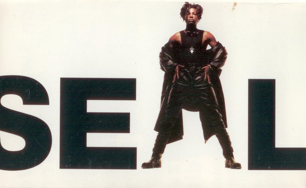

CASSETTE
Seal
Seal
Media: NM · Sleeve: NM
CA$10.00
Discogs SuggestedCA$11.40
Discogs MedianCA$11.40
Discogs HighCA$11.40
- Year
- 1991
- Label
- ZTT
- Catalog #
- 17 45574
- Country
- CACanada
- Genre / Style
- Electronic · Downtempo, Synth-pop
